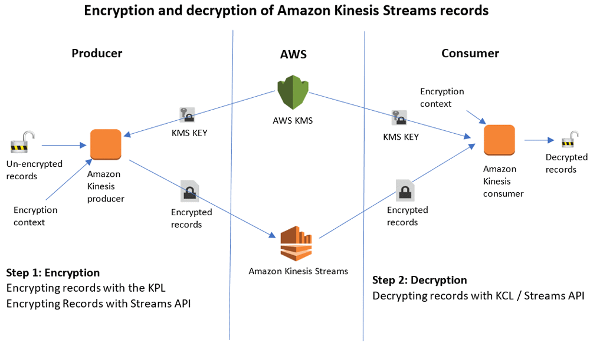
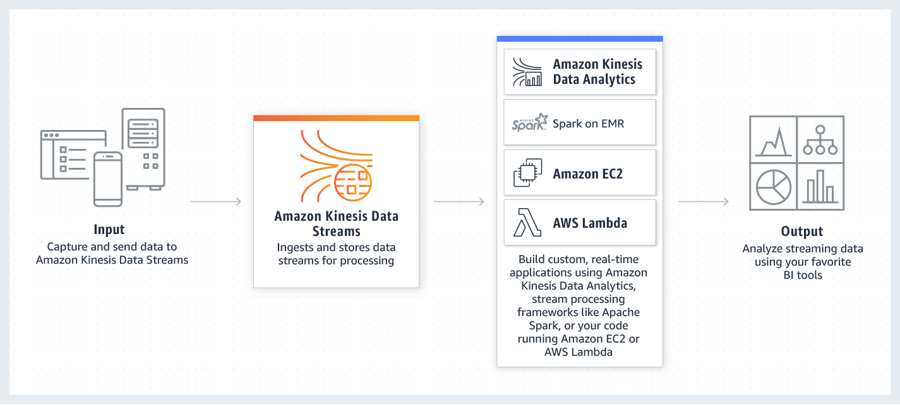

Test Report
Review questions
Jun 17, 2019 05:02AM EDT
 12 correct
12 correct 38 incorrect
38 incorrectYour answer
B. Create a manual snapshot of the Amazon Redshift cluster.
C. Make a copy of the automated snapshot on the Amazon Redshift cluster.
D. Call the waitForSnapshotAvailable command from either the AWS CLI or an AWS SDK.
Correct answer is B as a manual snapshot needs to be taken to be able to restore Redshift to the point before upgrade.
Refer AWS documentation - Redshift Snapshots
Snapshots are point-in-time backups of a cluster. There are two types of snapshots: automated and manual. Amazon Redshift stores these snapshots internally in Amazon S3 by using an encrypted Secure Sockets Layer (SSL) connection.
Amazon Redshift automatically takes incremental snapshots that track changes to the cluster since the previous automated snapshot. Automated snapshots retain all of the data required to restore a cluster from a snapshot. You can create a snapshot schedule to control when automated snapshots are taken, or you can take a manual snapshot any time.
When you restore from a snapshot, Amazon Redshift creates a new cluster and makes the new cluster available before all of the data is loaded, so you can begin querying the new cluster immediately. The cluster streams data on demand from the snapshot in response to active queries, then loads the remaining data in the background.
When you launch a cluster, you can set the retention period for automated and manual snapshots. You can change the retention period for automated and manual snapshots by modifying the cluster. You can change the retention period for a manual snapshot when you create the snapshot or by modifying the snapshot.
You can take a manual snapshot any time. By default, manual snapshots are retained indefinitely, even after you delete your cluster. You can specify the retention period when you create a manual snapshot, or you can change the retention period by modifying the snapshot. If you create a snapshot using the Amazon Redshift console, it defaults the snapshot retention period to 365 days.
If a snapshot is deleted, you can't start any new operations that reference that snapshot. However, if a restore operation is in progress, that restore operation will run to completion.
Option A is wrong as it would only copy the data.
Option C is wrong as you cannot copy the automated snapshot. Also, automated snapshot are controlled by time and size and would not represent the data before upgrade.
Option D is wrong as waitForSnapshotAvailable needs to be called after triggering the manual snapshot creation and it can be verified from console as well.
AWS BDS-C00 Question feedbackYour answer
B. Collect the sensor data with Amazon SQS and store in Amazon DynamoDB for analysis. Collect emergency services events with Amazon Kinesis Firehose and store in Amazon Redshift for analysis.
C. Collect both sensor data and emergency services events with Amazon Kinesis Streams and use DynamoDB for analysis.
D. Collect both sensor data and emergency services events with Amazon Kinesis Firehose and use Amazon Redshift for analysis.
Correct answer is A as we need to tackle 2 issues. First is to capture real time sensor data and store it for analysis. Second is to respond to emergency notifications events with low latency. First can be handled using Kinesis Firehose to load data in Redshift for analysis. Second can be handled using SQS for notifications and DynamoDB for quick analysis or processing.
Refer AWS documentation - Kinesis Firehose FAQs
Amazon Kinesis Data Firehose buffers incoming streaming data to a certain size or for a certain period of time before delivering it to destinations. You can configure buffer size and buffer interval while creating your delivery stream. Buffer size is in MBs and ranges from 1MB to 128MB for Amazon S3 destination and 1MB to 100MB for Amazon Elasticsearch Service destination. Buffer interval is in seconds and ranges from 60 seconds to 900 seconds. Please note that in circumstances where data delivery to destination is falling behind data writing to delivery stream, Firehose raises buffer size dynamically to catch up and make sure that all data is delivered to the destination.
Option B is wrong as SQS is not suitable for real time sensor data collection and not is DynamoDB for analytics. Also, Redshift with Kinesis would not provide quick handling for data as Kinesis works on buffer interval and buffer size.
Option C is wrong as DynamoDB is not ideal for batch analytics.
Option D is wrong as Kinesis would not work emergency services handling as it works on buffer interval and buffer size.
Points : 5 out of 5
Your answer
B. Copy the existing KMS key to the destination region.
C. Use CreateSnapshotCopyGrant to allow Amazon Redshift to use the KMS key from the destination region.
D. Use CreateSnapshotCopyGrant to allow Amazon Redshift to use the KMS key from the source region.
E. In the source region, enable cross-region replication and specify the name of the copy grant created.
F. In the destination region, enable cross-region replication and specify the name of the copy grant created.
C. Use CreateSnapshotCopyGrant to allow Amazon Redshift to use the KMS key from the destination region.
E. In the source region, enable cross-region replication and specify the name of the copy grant created.
Correct answers are A, C & E
Option A as KMS keys are specific to the region and a new key needs to be created in the destination region.
Option C as the grant needs to be provided for Redshift to use the master key in the destination region
Option E as the replication needs to be enabled on the source region.
Refer AWS documentation - Cross Region KMS Encrypted Snapshot & Redshift - Copying AWS KMS-Encrypted Snapshots to Another AWS Region
When you launch an Amazon Redshift cluster, you can choose to encrypt it with a master key from the AWS Key Management Service (AWS KMS). AWS KMS keys are specific to a region. If you want to enable cross-region snapshot copy for an AWS KMS-encrypted cluster, you must configure a snapshot copy grant for a master key in the destination region so that Amazon Redshift can perform encryption operations in the destination region.
AWS KMS keys are specific to an AWS Region. If you enable copying of Amazon Redshift snapshots to another AWS Region, and the source cluster and its snapshots are encrypted using a master key from AWS KMS, you need to configure a grant for Amazon Redshift to use a master key in the destination AWS Region. This grant enables Amazon Redshift to encrypt snapshots in the destination AWS Region.
Option B is wrong as keys are specific to the region, new keys need to be created.
Option D is wrong as the grants need to be provided in the destination region
Option F is wrong as the cross-region replication needs to be enabled in the source region.
Your answer
B. Create two separate workload management groups and assign them to the respective groups.
C. Pause the long queries when necessary and resume them when there are no queries happening.
D. Start another Redshift cluster from a snapshot for the second team if the current Redshift cluster is busy processing long queries.
Correct answer is B as Redshift workload management allows proper usage of cluster.
Refer to the AWS Blog for Redshift to run mixed workloads
Amazon Redshift Workload Management allows you to manage workloads of various sizes and complexity for specific environments. Parameter groups contain WLM configuration, which determines how many query queues are available for processing and how queries are routed to those queues. Following settings are available
- How many queries can run concurrently in each queue
- How much memory is allocated among the queues
- How queries are routed to queues, based on criteria such as the user who is running the query or a query label
- Query timeout settings for a queue
Your answer
B. Use AWS QuickSight to connect it to data stored in Amazon S3 to obtain the necessary business insight. Plot the churn trend graph to extrapolate churn likelihood for existing customers.
C. Use EMR to run the Hive queries to build a profile of a churning customer. Apply a profile to existing customers to determine the likelihood of churn.
D. Use a Redshift cluster to COPY the data from Amazon S3. Create a User Defined Function in Redshift that computes the likelihood of churn.
Correct answer is A as the simplest way to build the model is to use the Amazon Machine Learning (Amazon ML), using the binary classification model. As the company has historical data they can learn from and apply it from the new data.
Refer AWS documentation - Predicting Customer Churn with Amazon Machine Learning
Options B, C & D are wrong as they do not provide models or methods to apply to new data.
Points : 5 out of 5
Your answer
B. Deploy the new application component as an Elastic Beanstalk application, read the data from the social media sites, store it in DynamoDB, and use Apache Hive with Amazon Elastic MapReduce for analytics.
C. Deploy the new application component in an Auto Scaling group of Amazon EC2 instances, read the data from the social media sites, store it in Amazon Glacier, and use AWS Data Pipeline to publish it to Amazon RedShift for analytics.
D. Deploy the new application component as an Amazon Elastic Beanstalk application, read the data from the social media site, store it with Amazon Elastic Block store, and use Amazon Kinesis to stream the data to Amazon CloudWatch for analytics.
Correct answer is B as the point here is durable data store with any time analytics the best option is to store the data in DynamoDB and use Apache Hive with Amazon Elastic MapReduce for analytics.
Refer AWS documentation - DynamoDB EMR Hive Processing
Option A is wrong as Elastic Block Store is not ideal for storing social media data
Option C is wrong as Amazon Glacier is not an ideal for storing social media data
Option D is wrong as Elastic Block Store is not ideal for storing social media data and CloudWatch is not for analytics.
Your answer
B. Deploy a long-running Amazon Elastic MapReduce (EMR) cluster with Amazon Elastic Block Store (EBS) volumes for persistent HDFS storage and appropriate Hadoop ecosystem tools for processing and querying.
C. Use Amazon Redshift with data replication to Amazon Simple Storage Service (S3) for comprehensive durable data storage, processing, and querying.
D. Launch an Amazon Relational Database Service (RDS), and use the enterprise grade and capacity of the Amazon Aurora engine for storage, processing, and querying.
Correct answer is A as S3 can provide the most cost-effective solution to store data while providing highly durable and highly flexible storage option with respect to the type and structure of data.
Option B is wrong and HDFS would not be a cost-effective option as compared to S3.
Options C & D are wrong as they do not have flexibility in terms of data type and structure and would not be cost-effective as well.
AWS BDS-C00 Question feedbackPoints : 5 out of 5
Your answer
B. Write a script in your language of choice, install the script on an Amazon EC2 instance, and then use Auto Scaling groups to ensure that the latency of the migration pipelines never exceeds four seconds in any 15-minute period.
C. Write a bash script to run on your Amazon RDS instance that will export data into DynamoDB.
D. Create a data pipeline to export Amazon RDS data and import the data into DynamoDB.
Correct answer is D as Data Pipeline can be used to import the data from MySQL and Export it to DynamoDB as batch.
Refer AWS documentation - Near Zero Downtime Migration from MySQL to DynamoDB, Data Pipeline Export MySQL & Data Pipeline Import DynamoDB
Option A is wrong as Kinesis data stream cannot emit data directly to DynamoDB table and would need a consumer. Also Kinesis is best for real-time puts
Option B is wrong as it doesn’t define how the migration is happening
Option C is wrong as You do not have access to RDS instance.
Your answer
B. Create a Cluster Security Group to allow the Amazon Redshift cluster to access Amazon S3.
C. Create a NAT gateway in a public subnet to allow the Amazon Redshift cluster to access Amazon S3.
D. Create and configure an Amazon S3 VPC endpoint.
D. Create and configure an Amazon S3 VPC endpoint.
Correct answer are A & D as Redshift Enhanced VPC Routing helps access AWS services including S3 through VPC, without having to route any traffic through internet. Also, note the region is the same.
Refer AWS documentation - Redshift Enhanced VPC Routing
When you use Amazon Redshift Enhanced VPC Routing, Amazon Redshift forces all COPY and UNLOAD traffic between your cluster and your data repositories through your Amazon VPC. You can now use standard VPC features, such as VPC security groups, network access control lists (ACLs), VPC endpoints, VPC endpoint policies, Internet gateways, and Domain Name System (DNS) servers, to tightly manage the flow of data between your Amazon Redshift cluster and other resources. When you use Enhanced VPC Routing to route traffic through your VPC, you can also use VPC flow logs to monitor COPY and UNLOAD traffic.
If Enhanced VPC Routing is not enabled, Amazon Redshift routes traffic through the Internet, including traffic to other services within the AWS network.
VPC Endpoints – For traffic to an Amazon S3 bucket in the same region as your cluster, you can create a VPC endpoint to direct traffic directly to the bucket. When you use VPC endpoints, you can attach an endpoint policy to manage access to Amazon S3.
Option B is wrong as Redshift cannot directly access S3 without internet
Option C is wrong as NAT enables connectivity to services via Internet only or other AWS services.
NAT gateway – To connect to an Amazon S3 bucket in another region or to another service within the AWS network, or to access a host instance outside the AWS network, you can configure a network address translation (NAT) gateway.
Your answer
B. Set up an auto-scaling policy on the DynamoDB table that doesn't let the traffic dip below the usual load and allows it to scale to meet demand.
C. Enabled DynamoDB streams have a Lambda function triggered to review the current capacity on each change to the table.
D. Provision a base WCU of 160 and then schedule a job that adds 160 more WCUs when a higher load is expected.
Correct answer is B as DynamoDB Auto Scaling can help scale as per the demand.
Refer AWS documentation - DynamoDB AutoScaling
Many database workloads are cyclical in nature or are difficult to predict in advance. For example, consider a social networking app where most of the users are active during daytime hours. The database must be able to handle the daytime activity, but there's no need for the same levels of throughput at night. Another example might be a new mobile gaming app that is experiencing rapid adoption. If the game becomes too popular, it could exceed the available database resources, resulting in slow performance and unhappy customers. These kinds of workloads often require manual intervention to scale database resources up or down in response to varying usage levels.
DynamoDB auto scaling uses the AWS Application Auto Scaling service to dynamically adjust provisioned throughput capacity on your behalf, in response to actual traffic patterns. This enables a table or a global secondary index to increase its provisioned read and write capacity to handle sudden increases in traffic, without throttling. When the workload decreases, Application Auto Scaling decreases the throughput so that you don't pay for unused provisioned capacity.
Option A is wrong as its more of a manual effort and not a cost-effective way as compared to B
Option C is wrong as DynamoDB streams captures a time-ordered sequence of item-level modifications in any DynamoDB table, and stores this information in a log for up to 24 hours. It cannot help review the current capacity.
Option D is wrong as it is not a cost effective to provision the throughput to the maximum required.
AWS BDS-C00 Question feedbackYour answer
B. QuickSight
C. Ganglia
D. YARN
Correct answer is A as Presto allows ad hoc query analysis over multiple data sources.
Refer AWS documentation - Presto
Presto (or PrestoDB) is an open source, distributed SQL query engine, designed from the ground up for fast analytic queries against data of any size. It supports both non-relational sources, such as the Hadoop Distributed File System (HDFS), Amazon S3, Cassandra, MongoDB, and HBase, and relational data sources such as MySQL, PostgreSQL, Amazon Redshift, Microsoft SQL Server, and Teradata.
Presto can query data where it is stored, without needing to move data into a separate analytics system. Query execution runs in parallel over a pure memory-based architecture, with most results returning in seconds.
Option B is wrong as QuickSight is a fast, cloud-powered business intelligence service that makes it easy to deliver insights to everyone in your organization.
Option C is wrong as Ganglia is a scalable distributed monitoring system for high-performance computing systems such as clusters and Grids
Option D is wrong as YARN is the resource management and job scheduling technology in the open source Hadoop distributed processing framework.
Points : 5 out of 5
Your answer
B. Amazon RDS Database, being a multi-modal database support document models and NoSQL requirements
C. Amazon DynamoDB Database, being a document database support document models and NoSQL requirements
D. Amazon Neptune Database, being a graph database support document models and NoSQL requirements
Correct answer is C as Amazon DynamoDB is a fully managed NoSQL database service that provides fast and predictable performance with seamless scalability.
Option A is wrong as Amazon Aurora (Aurora) is a fully managed relational database engine that's compatible with MySQL and PostgreSQL. Amazon Aurora supports relational data models and does not support graph model.
Option B is wrong as Amazon Relational Database Service (Amazon RDS) is a web service that makes it easier to set up, operate, and scale a relational database in the cloud. Amazon RDS supports relational data models and does not support graph model.
Option D is wrong as Amazon Neptune is a fast, reliable, fully managed graph database service that makes it easy to build and run applications that work with highly connected datasets.
AWS BDS-C00 Question feedbackYour answer
B. Use EMR and write a custom script to retrieve data from DynamoDB in the current region using a SCAN operation and push it to DynamoDB in the second region.
C. Use AWS Data Pipeline to schedule an export of the DynamoDB table to S3 in the current region once a day then schedule another task immediately after it that will import data from S3 to DynamoDB in the other region.
D. Send each update into an SQS queue in the second region; use an auto-scaling group behind the SQS queue to replay the write in the second region.
Correct answer is A as the key requirement here is DR with RTO of 2 hours and a RPO of 24 hours with only the changed items to be replicated. DynamoDB cross region copy would help for DR with required RPO and RTO with Lastupdated time would help replicate only updated items.
Refer AWS DynamoDB Data Copy Between Regions Blog
Option B is wrong the scan operation is expensive and time consuming and would not help meet RTO. Also, there is no handling for only updated data.
Option C is wrong is time consuming and would not help meet the RTO. Also, there is no handling for only updated data.
Option D is wrong as this needs update to the application to push data to DynamoDB as well the SQS in a reliable manner.
Points : 5 out of 5
Your answer
B. Amazon EMR
C. AWS Data Pipeline
D. Amazon SQS
Correct answer is A as Kinesis Data Firehose can be used to transfer data directly to Elasticsearch, without any handling.
Refer AWS documentation - Kinesis Firehose
Amazon Kinesis Data Firehose is the easiest way to reliably load streaming data into data stores and analytics tools. It can capture, transform, and load streaming data into Amazon S3, Amazon Redshift, Amazon Elasticsearch Service, and Splunk, enabling near real-time analytics with existing business intelligence tools and dashboards you’re already using today. It is a fully managed service that automatically scales to match the throughput of your data and requires no ongoing administration. It can also batch, compress, transform, and encrypt the data before loading it, minimizing the amount of storage used at the destination and increasing security.
Option B is wrong as EMR is for batch analytics.
Option C is wrong as AWS Data Pipeline does not capture real time data. AWS Data Pipeline is a web service that helps you reliably process and move data between different AWS compute and storage services, as well as on-premises data sources, at specified intervals.
Option D is wrong as SQS is a message service and would need handling to storage to Elasticsearch.
Points : 5 out of 5
Your answer
B. Use Amazon S3 Server-Side Encryption with Amazon S3-Managed Keys. Set Amazon S3 ACLs to allow access to specific elements of the platform. Use Amazon S3 to access logs for auditing.
C. Use Amazon S3 Client-Side Encryption with Client-Side Master Key. Set Amazon S3 ACLs to allow access to specific elements of the platform. Use Amazon S3 to access logs for auditing.
D. Use Amazon S3 Client-Side Encryption with AWS KMS-Managed Keys for storing data. Use AWS KMS Grants to allow access to specific elements of the platform. Use AWS CloudTrail for auditing.
Correct answer is B as S3 Server Side Encryption with S3 Managed Keys provide encryption. S3 ACLs allows fine grained control access and S3 to access logs would help provide traceability across all tools.
Use Server-Side Encryption with Amazon S3-Managed Keys (SSE-S3) – Each object is encrypted with a unique key. As an additional safeguard, it encrypts the key itself with a master key that it regularly rotates. Amazon S3 server-side encryption uses one of the strongest block ciphers available, 256-bit Advanced Encryption Standard (AES-256), to encrypt your data.
Option C is wrong as with Client-Side Encryption, the users must have the keys to decrypt the data.
When downloading an object—The client downloads the encrypted object from Amazon S3. Using the material description from the object's metadata, the client determines which master key to use to decrypt the data key. The client uses that master key to decrypt the data key and then uses the data key to decrypt the object.
Options A & D are wrong as KMS Grants are mainly to provide access to the KMS keys. There is not mention of fine grained control over the S3 objects.
Your answer
B. The mobile app should authenticate with an Amazon Cognito identity that is authorized to write to an Amazon Kinesis Firehose with an Amazon S3 destination.
C. The mobile app should authenticate with an embedded IAM access key that is authorized to write to an Amazon Kinesis Firehose with an Amazon S3 destination.
D. The mobile app should call a REST-based service that stores data on Amazon EBS. Deploy the service on multiple EC2 instances across two Availability Zones.
Correct answer is B as it is essential when writing mobile applications that you consider the security of both how the application authenticates and how it stores credentials. Amazon Cognito gives you the ability to securely authenticate pools of users on any type of device at scale.
Option A is wrong as it uses an anonymous Put, which may allow other apps to write counterfeit data;
Option C is wrong as it would put credentials directly into the application, which is strongly discouraged because applications can be decompiled which can compromise the keys.
Option D is wrong as it does not meet our availability requirements: although the EC2 instances are running in different Availability Zones, the EBS volumes attached to each instance only store data in a single Availability Zone.
Your answer
B. Pie Chart
C. Pivot Table
D. Line Chart
Correct answer is D as you need to represent time driven data for demand trends over multiple months, Line chart would be an ideal choice.
Refer AWS documentation - QuickSight Visual Types
Option A is wrong as Scatter plots can help to visualize two or three measures for a dimension.
Option B is wrong as Pie charts can help to compare values for items in a dimension.
Option C is wrong as Pivot tables can help to show measure values for the intersection of two dimensions.
Your answer
B. Use Amazon S3 server-side encryption with customer-provided keys
C. Use Amazon S3 server-side encryption with EC2 key pair.
D. Use Amazon S3 bucket policies to restrict access to the data at rest.
E. Encrypt the data on the client-side before ingesting to Amazon S3 using their own master key
F. Use SSL to encrypt the data while in transit to Amazon S3.
B. Use Amazon S3 server-side encryption with customer-provided keys
E. Encrypt the data on the client-side before ingesting to Amazon S3 using their own master key
Correct answers are A, B & E
Refer to the AWS S3 Protecting Data using Encryption
Data at rest encryption using S3 can be implemented using either Server Side or Client Side encryption. SSE can be implemented using either KMS provided keys (SSE-KMS) or Customer provided keys (SSE-C). CSE can be implemented by encrypting the data before uploading it to S3 and then decrypting the data after downloading it from S3 at client side.
Option C is wrong as server side encryption doesn't work with EC2 key pair
Option D is wrong as bucket policies are just to restrict access to S3
Option F is wrong as it targets the data in transit only.
Your answer
B. IPython/Jupyter
C. R Studio
D. Hue
Correct answer is A as D3.js is a JavaScript library for manipulating documents based on data. D3 helps you bring data to life using HTML, SVG, and CSS. D3’s emphasis on web standards gives you the full capabilities of modern browsers without tying yourself to a proprietary framework, combining powerful visualization components and a data-driven approach to DOM manipulation.
Option B is wrong as Jupyter is an open-source web application that allows you to create and share documents that contain live code, equations, visualizations and narrative text. Uses include: data cleaning and transformation, numerical simulation, statistical modeling, data visualization, machine learning, and much more. It is not a rich visualization tool which supports all the web standards.
Option C is wrong as RStudio makes R easier to use. It includes a code editor, debugging & visualization tools.
Option D is wrong as Hue is the open source analytics workbench designed for fast data discovery, intelligent query assistance, and seamless collaboration
Points : 5 out of 5
Your answer
B. Start with fewer large nodes.
C. Have two separate clusters with a mix of a small and large nodes.
D. Insist on performing multiple tests to determine the optimal configuration.
Correct answer is A as the customer is planning to use Dense Storage nodes, they can start with more number of small nodes which would be cost-effective as compared to large nodes and easier to improve query performance and storage.
Refer AWS documentation - Redshift Cluster & Nodes
DS2 node types are optimized for large data workloads and use hard disk drive (HDD) storage. Node types are available in different sizes. DS2 nodes are available in xlarge and 8xlarge sizes.
The number of nodes that you choose depends on the size of your dataset and your desired query performance. Using the dense storage node types as an example, if you have 32 TB of data, you can choose either 16 ds2.xlarge nodes or 2 ds2.8xlarge nodes. If your data grows in small increments, choosing the ds2.xlarge node size allows you to scale in increments of 2 TB. If you typically see data growth in larger increments, a ds2.8xlarge node size might be a better choice.
Because Amazon Redshift distributes and executes queries in parallel across all of a cluster’s compute nodes, you can increase query performance by adding nodes to your cluster. Amazon Redshift also distributes your data across all compute nodes in a cluster. When you run a cluster with at least two compute nodes, data on each node will always be mirrored on disks on another node and you reduce the risk of incurring data loss.
Option B is wrong as with 50TB you would need 4 large nodes and it would not be as cost effective as small nodes.
Options C & D are wrong as it is not meet the customer requirement of limited budget and avoid performing tests unless absolutely needed.
AWS BDS-C00 Question feedbackPoints : 5 out of 5
Your answer
B. Write the sensor data directly to a scaleable DynamoDB; create a data pipeline that starts an EMR cluster using data from DynamoDB and sends the data to S3 and Redshift.
C. Write the sensor data to Amazon S3 with a lifecycle policy for Glacier, create an EMR cluster that uses the bucket data and runs it through ETL. It then outputs that data into Redshift data warehouse.
D. Write the sensor data directly to Amazon Kinesis and output the data into Amazon S3 creating a lifecycle policy for Glacier archiving. Also, have a parallel processing application that runs the data through EMR and sends to a Redshift data warehouse.
Correct answer is D as the requirement is real time data ingestion and analytics, the best option is to use Kinesis for storing the real time incoming data. The data can then be moved to S3 and analyzed using EMR and Redshift. Data can then be moved to Glacier for archival.
Refer AWS documentation - Kinesis
Amazon Kinesis is a platform for streaming data on AWS, making it easy to load and analyze streaming data, and also providing the ability for you to build custom streaming data applications for specialized needs.
- Use Amazon Kinesis Streams to collect and process large streams of data records in real time.
- Use Amazon Kinesis Firehose to deliver real-time streaming data to destinations such as Amazon S3 and Amazon Redshift.
- Use Amazon Kinesis Analytics to process and analyze streaming data with standard SQL.
Option A is wrong as Cognito is not suitable for handling real time data
Amazon Cognito lets you easily add user sign-up and sign-in and manage permissions for your mobile and web apps. You can create your own user directory within Amazon Cognito, or you can authenticate users through social identity providers such as Facebook, Twitter, or Amazon; with SAML identity solutions; or by using your own identity system. In addition, Amazon Cognito enables you to save data locally on users' devices, allowing your applications to work even when the devices are offline. You can then synchronize data across users' devices so that their app experience remains consistent regardless of the device they use.
Option B is wrong as DynamoDB is not suitable for streaming data ingestion and handling.
Option C is wrong as S3 is not an ideal solution to handle this huge amount of requests.
Your answer
B. D3.js
C. Kinesis Analytics
D. Zeppelin
Correct answer is D as Zeppelin provides data ingestion, data discovery, data analytics and data visualization & collaboration.
Refer documentation - Zeppelin
Zeppelin is a web-based notebook that enables data-driven, interactive data analytics and collaborative documents with SQL, Scala and more.
Apache Zeppelin interpreter concept allows any language/data-processing-backend to be plugged into Zeppelin. Currently Apache Zeppelin supports many interpreters such as Apache Spark, Python, JDBC, Markdown and Shell.
Some basic charts are already included in Apache Zeppelin. Visualizations are not limited to SparkSQL query, any output from any language backend can be recognized and visualized.
Option A is wrong as Hive is data warehouse software facilitates reading, writing, and managing large datasets residing in distributed storage using SQL.
Option B is wrong as D3.js a JavaScript library for manipulating documents based on data. D3 helps you bring data to life using HTML, SVG, and CSS.
Option C is wrong as Kinesis Data Analytics is the easiest way to analyze streaming data, gain actionable insights, and respond to your business and customer needs in real time.
Your answer
B. Create a VPN connection between a VPC you create in AWS and an on-premises network. Then launch the Redshift cluster in the VPC, and configure it to use your corporate HSM.
C. Use the AWS CloudHSM service to establish a trust relationship between the CloudHSM and the corporate HSM over a Direct Connect connection. Configure Amazon Redshift to use the CloudHSM device.
D. Configure the AWS Key Management Service to point to the corporate HSM device, and then launch the Amazon Redshift cluster with the KMS managing the encryption keys.
Correct answer is B as Redshift Cluster can integrate with corporate HSM via VPN in a cost-effective way
Refer AWS documentation - Redshift Encryption
In Amazon Redshift, you can enable database encryption for your clusters to help protect data at rest. When you enable encryption for a cluster, the data blocks and system metadata are encrypted for the cluster and its snapshots.
You can enable encryption when you launch your cluster, or you can modify an unencrypted cluster to use AWS Key Management Service (AWS KMS) encryption. To do so, you can use either an AWS-managed key or a customer-managed key (CMK). When you modify your cluster to enable KMS encryption, Amazon Redshift automatically migrates your data to a new encrypted cluster. Snapshots created from the encrypted cluster are also encrypted.
Amazon Redshift uses a hierarchy of encryption keys to encrypt the database. You can use either AWS Key Management Service (AWS KMS) or a hardware security module (HSM) to manage the top-level encryption keys in this hierarchy. The process that Amazon Redshift uses for encryption differs depending on how you manage keys. Amazon Redshift automatically integrates with AWS KMS but not with an HSM. When you use an HSM, you must use client and server certificates to configure a trusted connection between Amazon Redshift and your HSM.
Option A is wrong as importing HSM to AWS would not be secure as it against the requirement.
Option C is wrong as Direct Connect would be cheap and quick to start with.
Option D is wrong as CloudHSM cannot connect to on-premises.
Does CloudHSM work with on-premises HSMs? - Yes. While CloudHSM does not interoperate directly with on-premises HSMs, you can securely transfer exportable keys between CloudHSM and most commercial HSMs using one of several supported RSA key wrap methods.
AWS BDS-C00 Question feedbackYour answer
B. Store the data in S3. Launch an encrypted Redshift cluster, copy the data to the Redshift cluster and store back in S3 in encrypted format
C. Store the data in S3 with Server Side Encryption. Launch an encrypted Redshift cluster and copy the data to the cluster.
D. Store the data in S3 with Server Side Encryption. Launch a Redshift cluster, copy the data to cluster and enable encryption on the cluster.
Correct answer is C as the need is for data at rest encryption. S3 with SSE will help store the data in S3 in encrypted format.
Refer AWS documentation - Redshift Encryption & S3 Encryption
In Amazon Redshift, you can enable database encryption for your clusters to help protect data at rest. When you enable encryption for a cluster, the data blocks and system metadata are encrypted for the cluster and its snapshots.
Encryption is an optional, immutable setting of a cluster. If you want encryption, you enable it during the cluster launch process. To go from an unencrypted cluster to an encrypted cluster or the other way around, unload your data from the existing cluster and reload it in a new cluster with the chosen encryption setting.
Option A is wrong as data is not encrypted in Redshift.
Option B is wrong as data is not encrypted in S3.
Option D is wrong as you cannot enable encryption after Redshift cluster is launched.
Your answer
B. Amazon Kinesis
C. Amazon DynamoDB
D. Amazon RDS
Correct answer is D as Amazon RDS handles all these requirements, and although Amazon RDS is not typically thought of as optimized for key-value based access, a schema with a good primary key selection can provide this functionality.
Option A is wrong as Amazon S3 provides no fixed schema and does not have consistent read after PUT support.
Option B is wrong as Amazon Kinesis supports streaming data that is consistent as of a given sequence number but doesn't provide key/value access.
Option C is wrong as Amazon DynamoDB provides key/value access and consistent reads, it does not support SQL-based queries.
AWS BDS-C00 Question feedbackYour answer
B. Modify the application to add random prefixes to the files before uploading.
C. Set up Amazon Route 53 with latency-based routing to route the uploads to the nearest S3 bucket region.
D. Enable S3 Transfer Acceleration on the S3 bucket, and configure the application to use the Transfer Acceleration endpoint for uploads.
E. Configure the application to break the video files into chunks and use a multipart upload to transfer files to Amazon S3.
E. Configure the application to break the video files into chunks and use a multipart upload to transfer files to Amazon S3.
Correct answers are D & E
Option D as S3 Transfer Acceleration helps speed up the upload performance. Amazon S3 Transfer Acceleration enables fast, easy, and secure transfers of files over long distances between your client and an S3 bucket. Transfer Acceleration takes advantage of Amazon CloudFront’s globally distributed edge locations. As the data arrives at an edge location, data is routed to Amazon S3 over an optimized network path.
Option E as multipart upload helps provide better recoverability.
Depending on the size of the data you are uploading, Amazon S3 offers the following options:
- Upload objects in a single operation—With a single PUT operation, you can upload objects up to 5 GB in size.
- Upload objects in parts—Using the multipart upload API, you can upload large objects, up to 5 TB.The multipart upload API is designed to improve the upload experience for larger objects. You can upload objects in parts. These object parts can be uploaded independently, in any order, and in parallel. You can use a multipart upload for objects from 5 MB to 5 TB in size.
We recommend that you use multipart uploading in the following ways:
- If you're uploading large objects over a stable high-bandwidth network, use multipart uploading to maximize the use of your available bandwidth by uploading object parts in parallel for multi-threaded performance.
- If you're uploading over a spotty network, use multipart uploading to increase resiliency to network errors by avoiding upload restarts. When using multipart uploading, you need to retry uploading only parts that are interrupted during the upload. You don't need to restart uploading your object from the beginning.
Option A is wrong as the mobile application needs to be configured for different endpoints and does not improve performance. Also, cross region replication would create duplication and increase cost.
Option B is wrong as random prefixes are no more needed for improving performance.
Option C is wrong as Route 53 latency based routing works only with S3 static website.
Your answer
B. Use a partition key to segment the data by MD5 hash function, which makes it undecipherable while in transit.
C. Perform a client-side encryption of the data before it enters the Amazon Kinesis stream on the consumer.
D. Use a shard to segment the data, which has built-in functionality to make it indecipherable while in transit.
Correct answer is A as the data can be encrypted using client side encryption. The encryption needs to be done on the producer before the data is pushed to Kinesis Streams.
Refer AWS documentation - Kinesis Encrypt and Decrypt Data

Options B & D are wrong as they do not provide encryption.
Option C is wrong as the encryption needs to happen at the producer side.
Points : 5 out of 5
Your answer
B. Turn on EMRFS consistent view when configuring the EMR cluster.
C. Set hadoop.data.consistency=true in the core-site.xml file.
D. Set hadoop.s3.consistency=true in the core-site.xml file.
Correct answer is B as EMRFS Consistent View helps provide a view of the objects in S3 and also tracks the consistency.
Refer AWS documentation - EMRFS Consistent View
EMRFS consistent view is an optional feature available when using Amazon EMR release version 3.2.1 or later. Consistent view allows EMR clusters to check for list and read-after-write consistency for Amazon S3 objects written by or synced with EMRFS. Consistent view addresses an issue that can arise due to the Amazon S3 Data Consistency Model. For example, if you add objects to Amazon S3 in one operation and then immediately list objects in a subsequent operation, the list and the set of objects processed may be incomplete. This is more commonly a problem for clusters that run quick, sequential steps using Amazon S3 as a data store, such as multi-step extract-transform-load (ETL) data processing pipelines.
When you create a cluster with consistent view enabled, Amazon EMR uses an Amazon DynamoDB database to store object metadata and track consistency with Amazon S3. If consistent view determines that Amazon S3 is inconsistent during a file system operation, it retries that operation according to rules that you can define.
With consistent view enabled, EMRFS returns the set of objects listed in an EMRFS metadata store and those returned directly by Amazon S3 for a given path. Because Amazon S3 is still the “source of truth” for the objects in a path, EMRFS ensures that everything in a specified Amazon S3 path is being processed regardless of whether it is tracked in the metadata. However, EMRFS consistent view only ensures that the objects in the folders that you track are checked for consistency.
Your answer
B. Use Amazon Redshift snapshot to create one cluster per manager. Allow the manager to access only their designated clusters.
C. Define a key for each manager in AWS KMS and encrypt the data for their employees with their private keys.
D. Define a view that uses the employee’s manager name to filter the records based on current user names.
Correct answer is D as you can create a view in Redshift which filters the records based on the current user name and show only those results for the logged in user.
Option A is wrong as IAM group with users cannot limit the access to the data in Redshift.
Option B is wrong as it does not limit or filter the data and it is not a cost-effective solution.
Option C is wrong as encryption cannot be done at each employee record level.
Your answer
B. Stem and tokenize the input and store the results into Amazon ElastiCache.
C. Write data as JSON into Amazon DynamoDB with primary and secondary indexes.
D. Aggregate feedback in Amazon S3 using a columnar format with partitioning.
Correct answer is A as Elasticsearch provides full text search capability and is a fully managed AWS service.
Refer AWS documentation - Elasticsearch Integration
You can load streaming data into your Amazon Elasticsearch Service domain from many different sources. Some sources, like Amazon Kinesis Data Firehose and Amazon CloudWatch Logs, have built-in support for Amazon ES. Others, like Amazon S3, Amazon Kinesis Data Streams, and Amazon DynamoDB, use AWS Lambda functions as event handlers. The Lambda functions respond to new data by processing it and streaming it to your domain.
Option B is wrong as Elasticache do not provide search capability, but more of a key value lookup and caching ability.
Option C is wrong as its not easy and cost-efficient to search on DynamoDB
Option D is wrong as S3 does not provide any search capability.
Points : 5 out of 5
Your answer
B. Change the primary table to partition on TransactionID, create a GSI partitioned on customer and sorted on date, project small attributes into GSI, and then query GSI for summary data and the primary table for JSON details.
C. Vertically partition the table, store base attributes on the primary table, and create a foreign key reference to a secondary table containing the JSON data. Query the primary table for summary data and the secondary table for JSON details.
D. Create an LSI sorted on date, project the JSON attribute into the index, and then query the primary table for summary data and the LSI for JSON details.
Correct answer is B as the key requirement is to reduce cost without affecting quality. The issue here is the JSON data is being read always even though it is not needed 90% of time. As the data size for JSON is huge compared to other attributes, the provisioned throughput needed is high. The issue can be resolved by retrieving only the details for history and the transaction details when needed. Creating a GSI for the base transaction history and using the primary for transaction summary would work perfectly.
Option A is wrong as it would affect the quality.
Option C is wrong as it is not possible.
Option D is wrong as the LSI needs to be created with the sort key as transaction id instead of date. This will allow to retrieve the transaction details from LSI and summary from primary table.
Also, note, both options B & D need changes to the base table as you cannot change the primary key of the table once created and nor can you create a LSI after the table is created.
Your answer
B. Compress the input file before running COPY.
C. Write a script to delete the data from the tables in case of errors.
D. Use the COPY command with the NOLOAD parameter.
Correct answer is D as NOLOAD checks the integrity of all of the data without loading it into the database. The NOLOAD option displays any errors that would occur if you had attempted to load the data. All other options will require subsequent processing on the cluster which will consume resources.
Refer AWS documentation - Data Load Copy Parameters
If you want to validate your data without actually loading the table, use the NOLOAD option with the COPY command.
Your answer
B. Batch sensor data to Amazon Simple Storage Service (S3) every 15 minutes. Flow the data downstream to the end-consumer dashboard and to the anomaly detection application.
C. Write sensor data records to Amazon Kinesis Firehose with Amazon Simple Storage Service (S3) as the destination. Consume the data with a KCL application for the end-consumer dashboard and anomaly detection.
D. Write sensor data records to Amazon Relational Database Service (RDS). Build both the end-consumer dashboard and anomaly detection application on top of Amazon RDS.
Correct answer is A as Kinesis Data Streams can help handle the streaming data. Kinesis Streams provides you with the ability to build custom applications to process and analyze streaming data using KCL which can be used for anomaly detection and processing.
Refer AWS documentation - Kinesis Streams

Although you can use Kinesis Data Streams to solve a variety of streaming data problems, a common use is the real-time aggregation of data followed by loading the aggregate data into a data warehouse or map-reduce cluster.
Data is put into Kinesis data streams, which ensures durability and elasticity. The delay between the time a record is put into the stream and the time it can be retrieved (put-to-get delay) is typically less than 1 second. In other words, a Kinesis Data Streams application can start consuming the data from the stream almost immediately after the data is added. The managed service aspect of Kinesis Data Streams relieves you of the operational burden of creating and running a data intake pipeline. You can create streaming map-reduce–type applications. The elasticity of Kinesis Data Streams enables you to scale the stream up or down, so that you never lose data records before they expire.
Multiple Kinesis Data Streams applications can consume data from a stream, so that multiple actions, like archiving and processing, can take place concurrently and independently. For example, two applications can read data from the same stream. The first application calculates running aggregates and updates an Amazon DynamoDB table, and the second application compresses and archives data to a data store like Amazon Simple Storage Service (Amazon S3). The DynamoDB table with running aggregates is then read by a dashboard for up-to-the-minute reports.
The Kinesis Client Library enables fault-tolerant consumption of data from streams and provides scaling support for Kinesis Data Streams applications.
Option B is wrong as S3 with batching would not provide near real time analysis on the stream data.
Option C is wrong as Kinesis Firehose would only transfer the data to S3. It does not provide ability for KCL applications to work on the streaming data.
Option D is wrong as RDS is not ideal for real time streaming data.
Points : 5 out of 5
Your answer
B. Use Amazon Kinesis Consumer Library
C. Encrypt the data once it is at rest with a Lambda function
D. Enable server-side encryption in Kinesis Streams
Correct answer is D as Kinesis support Server Side Encryption with which the data can be encrypted at rest.
Refer AWS documentation - Kinesis Server Side Encryption
Server-side encryption is a feature in Amazon Kinesis Data Streams that automatically encrypts data before it's at rest by using an AWS KMS customer master key (CMK) you specify. Data is encrypted before it's written to the Kinesis stream storage layer, and decrypted after it’s retrieved from storage. As a result, your data is encrypted at rest within the Kinesis Data Streams service. This allows you to meet strict regulatory requirements and enhance the security of your data.
With server-side encryption, your Kinesis stream producers and consumers don't need to manage master keys or cryptographic operations. Your data is automatically encrypted as it enters and leaves the Kinesis Data Streams service, so your data at rest is encrypted. AWS KMS provides all the master keys that are used by the server-side encryption feature. AWS KMS makes it easy to use a CMK for Kinesis that is managed by AWS, a user-specified AWS KMS CMK, or a master key imported into the AWS KMS service.
Option A is wrong as SSL/TLS is for Encryption for data in transit
Option B is wrong as Kinesis consumer library is for consumption of data.
Option C is wrong as the data is not encrypted when stored
AWS BDS-C00 Question feedbackYour answer
B. Create an SSH key and add that to the accepted keys of the Elasticsearch cluster. Then store that SSH key on your desktop and use it to sign in.
C. Create an IAM user and role that allows access to the Elasticsearch cluster.
D. Create an IP-based resource policy on the Elasticsearch cluster that allows access to requests coming from the IP of the machine.
Correct answer is D as IP-based resource policy can restrict access to the specific IP addresses only.
Refer AWS documentation - Elasticsearch Access Control
IP-based Policies - IP-based policies restrict access to a domain to one or more IP addresses or CIDR blocks. Technically, IP-based policies are not a distinct type of policy. Instead, they are just resource-based policies that specify an anonymous principal and include a special Condition element.
The primary appeal of IP-based policies is that they allow unsigned requests to an Amazon ES domain, which lets you use clients like curl and Kibana or access the domain through a proxy server.
Options A & B are user/password and ssh keys do not apply to Elasticsearch cluster.
Options C is wrong as you can define identity based policies, however it would not limit access to the specific IP.
AWS BDS-C00 Question feedbackYour answer
B. Use Amazon CloudWatch logs to capture all logs, write an AWS Lambda function that parses the log file, and move sensitive data to a different log.
C. Add logic to the application that saves sensitive data logs on the Amazon EC2 instances' local storage, and write a batch script that logs into the EC2 instances and moves sensitive logs to a secure location.
D. Use Amazon CloudWatch logs with two log groups, one for each application, and use an AWS IAM policy to control access to the log groups as required.
Correct answer is D as different CloudWatch log groups can be created, which can have separate access control policies.
Refer AWS documentation - CloudWatch Log Groups
A log group is a group of log streams that share the same retention, monitoring, and access control settings. You can define log groups and specify which streams to put into each group. There is no limit on the number of log streams that can belong to one log group.
Option A is wrong as the logs file are still combined and can be accessed by anyone who has access.
Option B is wrong as its an overhead to create a Lambda function.
Option C is wrong as this would need application changes.
AWS BDS-C00 Question feedbackYour answer
B. Apache Pig with Tachyon
C. Apache Hive
D. Presto
Correct answer is D as Presto can help work on Petabytes of data with the interactive ability.
Refer AWS documentation - EMR Presto
Presto is an open-source distributed SQL query engine optimized for low-latency, ad-hoc analysis of data. It supports the ANSI SQL standard, including complex queries, aggregations, joins, and window functions. Presto can process data from multiple data sources including the Hadoop Distributed File System (HDFS) and Amazon S3.
You can quickly and easily create managed Presto clusters from the AWS Management Console, AWS CLI, or the Amazon EMR API. Additionally, you can leverage additional Amazon EMR features, including fast Amazon S3 connectivity, integration with Amazon EC2 Spot instances, choice of a wide variety of Amazon EC2 instances, including the memory optimized instances, and resize commands to easily add or remove instances from your cluster.
Presto uses a custom query execution engine with operators designed to support SQL semantics. Different from Hive/MapReduce, Presto executes queries in memory, pipelined across the network between stages, thus avoiding unnecessary I/O. The pipelined execution model runs multiple stages in parallel and streams data from one stage to the next as it becomes available.
Run interactive queries that directly access data in Amazon S3, save costs using Amazon EC2 Spot instance capacity, use Auto Scaling to dynamically add and remove capacity, and launch long-running or ephemeral clusters to match your workload. You can also add other Hadoop ecosystem applications on your cluster.
Option A is wrong as Oozie is more of a schedular tool.
Options B & C are wrong as they will work with Map Reduce.
Your answer
B. Use AWS CloudTrail to track all the SSH access to the RDS instance
C. Use AWS Inspector to apply patches to the RDS instance
D. Use RDS encryption to secure the RDS instances and snapshots at rest.
D. Use RDS encryption to secure the RDS instances and snapshots at rest.
Correct answer are A, D as the RDS security can tightened using SSL connection and encryption.
Refer AWS documentation - RDS Security
- Run your DB instance in an Amazon Virtual Private Cloud (VPC) for the greatest possible network access control.
- Use AWS Identity and Access Management (IAM) policies to assign permissions that determine who is allowed to manage RDS resources. For example, you can use IAM to determine who is allowed to create, describe, modify, and delete DB instances, tag resources, or modify security groups.
- Use security groups to control what IP addresses or Amazon EC2 instances can connect to your databases on a DB instance. When you first create a DB instance, its firewall prevents any database access except through rules specified by an associated security group.
- Use Secure Socket Layer (SSL) connections with DB instances running the MySQL, MariaDB, PostgreSQL, Oracle, or Microsoft SQL Server database engines.
- Use RDS encryption to secure your RDS instances and snapshots at rest. RDS encryption uses the industry standard AES-256 encryption algorithm to encrypt your data on the server that hosts your RDS instance.
- Use network encryption and transparent data encryption with Oracle DB instances
- Use the security features of your DB engine to control who can log in to the databases on a DB instance, just as you do if the database was on your local network.
Option B is wrong you cannot SSH into an RDS instance and CloudTrail does not track SSH logins.
Option C is wrong as the RDS instance is AWS managed.
Your answer
B. Request data center Temporary Auditor access to an AWS data center to verify the control mapping.
C. Request relevant SLAs and security guidelines for Amazon DynamoDB and define these guidelines within the application’s architecture to map to the control framework.
D. Request Amazon DynamoDB system architecture designs to determine how to map the AWS responsibilities to the control that must be provided.
Correct answer is A as these are AWS specific and not accessible directly. AWS provides access to third party audit reports to confirm the same.
Refer AWS documentation - Risk Compliance Whitepaper
AWS and its customers share control over the IT environment, both parties have responsibility for managing the IT environment. AWS’ part in this shared responsibility includes providing its services on a highly secure and controlled platform and providing a wide array of security features customers can use. The customers’ responsibility includes configuring their IT environments in a secure and controlled manner for their purposes. While customers don’t communicate their use and configurations to AWS, AWS does communicate its security and control environment relevant to customers. AWS does this by doing the following:
- Obtaining industry certifications and independent third-party attestations described in this document
- Publishing information about the AWS security and control practices in whitepapers and web site content
- Providing certificates, reports, and other documentation directly to AWS customers under NDA (as required)
Option B is wrong as AWS does not allow access to the data center.
Option C is wrong as security guidelines is not specific to DynamoDB and it is pretty much customer controlled.
Option D is wrong as AWS does not share any DynamoDB system architecture design document.
Points : 5 out of 5
Your answer
B. Redshift
C. Kinesis
D. IoT Rules Engine
Correct answer is D as IoT Rules Engine can be used to capture data from Sensor and data received from the device can be inserted into DynamoDB.
Refer AWS documentation - AWS IoT Rules
Rules give your devices the ability to interact with AWS services. Rules are analyzed and actions are performed based on the MQTT topic stream. You can use rules to support tasks like these:
- Augment or filter data received from a device.
- Write data received from a device to an Amazon DynamoDB database.
- Save a file to Amazon S3.
- Send a push notification to all users using Amazon SNS.
- Publish data to an Amazon SQS queue.
- Invoke a Lambda function to extract data.
- Process messages from a large number of devices using Amazon Kinesis.
- Send data to the Amazon Elasticsearch Service.
- Capture a CloudWatch metric.
- Change a CloudWatch alarm.
- Send the data from an MQTT message to Amazon Machine Learning to make predictions based on an Amazon ML model.
- Send a message to a Salesforce IoT Input Stream.
- Send message data to an AWS IoT Analytics channel.
- Start execution of a Step Functions state machine.
- Send message data to an AWS IoT Events input.
Option A is wrong as a device's shadow is a JSON document that is used to store and retrieve current state information for a device. The Device Shadow service maintains a shadow for each device you connect to AWS IoT. You can use the shadow to get and set the state of a device over MQTT or HTTP, regardless of whether the device is connected to the Internet. Each device's shadow is uniquely identified by the name of the corresponding thing.
Option B is wrong as Redshift is a data warehousing solution.
Option C is wrong as while Kinesis could technically be used as an intermediary between different sources, it isn't a great way to get data into DynamoDB from an IoT device.
Your answer
B. Reduce the batch size that Lambda is reading from the stream.
C. Ignore and skip events that are older than 15 minutes and put them to Dead Letter Queue (DLQ).
D. Configure Lambda to read from fewer shards in parallel.
Correct answer is B as Lambda reads in batches from Kinesis from a single shard, and hence it might timeout if the batch of records is huge.
Refer AWS documentation - Lambda with Kinesis
You can use an AWS Lambda function to process records in an Amazon Kinesis data stream. With Kinesis, you can collect data from many sources and process them with multiple consumers. Lambda supports standard data stream iterators and HTTP/2 stream consumers.
Lambda reads records from the data stream and invokes your function synchronously with an event that contains stream records. Lambda reads records in batches and invokes your function to process records from the batch.
Your Lambda function is a consumer application for your data stream. It processes one batch of records at a time from each shard.
For standard iterators, Lambda polls each shard in your Kinesis stream for records at a base rate of once per second. When more records are available, Lambda keeps processing batches until it receives a batch that's smaller than the configured maximum batch size. The function shares read throughput with other consumers of the shard.
Option A is wrong as adding Lambda function does not reduce the batch of records read from Kinesis.
Option C is wrong as ignoring the data would lead to data loss and does not solve the problem
Option D is wrong as Lambda function reads from a single Kinesis shard.
Your answer
B. Encrypt using SSL/TLS for encrypting the data.
C. Encrypt using S3 Server Side Encryption.
D. Encrypt using Kinesis Server Side Encryption.
Correct answer is D as Kinesis support Server Side Encryption with which the data can be encrypted at rest.
Refer AWS documentation - Kinesis Server Side Encryption
Server-side encryption is a feature in Amazon Kinesis Data Streams that automatically encrypts data before it's at rest by using an AWS KMS customer master key (CMK) you specify. Data is encrypted before it's written to the Kinesis stream storage layer, and decrypted after it’s retrieved from storage. As a result, your data is encrypted at rest within the Kinesis Data Streams service. This allows you to meet strict regulatory requirements and enhance the security of your data.
With server-side encryption, your Kinesis stream producers and consumers don't need to manage master keys or cryptographic operations. Your data is automatically encrypted as it enters and leaves the Kinesis Data Streams service, so your data at rest is encrypted. AWS KMS provides all the master keys that are used by the server-side encryption feature. AWS KMS makes it easy to use a CMK for Kinesis that is managed by AWS, a user-specified AWS KMS CMK, or a master key imported into the AWS KMS service.
Option A is wrong as Kinesis supports encryption at rest
Option B is wrong as SSL/TLS is for Encryption for data in transit
Option C is wrong as S3 SSE does not work with Kinesis
Your answer
B. Last user session
C. Each user time series events in the past 3 months
D. Quarterly results
Correct answer is C as the time series data regarding the usage of the customer can give insights and help build and train the model
Refer AWS documentation - AWS Machine Learning Churn prediction
Options A & D are wrong as they do not give any idea of customer behaviour.
Option B is wrong as the data is too limited.
AWS BDS-C00 Question feedbackYour answer
B. Apache HBase
C. Apache HCatalog
D. Apache Spark
Correct answer is D as Apache Spark is a distributed processing framework and programming model that helps you do machine learning, stream processing, or graph analytics using Amazon EMR clusters. Similar to Apache Hadoop, Spark is an open-source,distributed processing system commonly used for big data workloads. However, Spark has several notable differences from Hadoop MapReduce. Spark has an optimized directed acyclic graph (DAG) execution engine and actively caches data in-memory, which can boost performance, especially for certain algorithms and interactive queries.
Option A is wrong as Hive is an open-source, data warehouse, and analytic package that runs on top of a Hadoop cluster. Hive scripts use an SQL-like language called Hive QL (query language) that abstracts programming models and supports typical data warehouse interactions. Hive enables you to avoid the complexities of writing Tez jobs based on directed acyclic graphs (DAGs) or MapReduce programs in a lower level computer language, such as Java. Hive extends the SQL paradigm by including serialization formats.
Option B is wrong as HBase is an open source, non-relational, distributed database developed as part of the Apache Software Foundation's Hadoop project. HBase runs on top of Hadoop Distributed File System (HDFS) to provide non- relational database capabilities for the Hadoop ecosystem. HBase works seamlessly with Hadoop, sharing its file system and serving as a direct input and output to the MapReduce framework and execution engine. HBase also integrates with Apache Hive, enabling SQL-like queries over HBase tables, joins with Hive-based tables, and support for Java Database Connectivity (JDBC).
Option C is wrong as HCatalog is a tool that allows you to access Hive metastore tables within Pig, Spark SQL, and/or custom MapReduce applications. HCatalog has a REST interface and command line client that allows you to create tables or do other operations.
Your answer
B. Use Amazon Simple Workflow (SWF) to manage assessments, movement of data & meta-data. Use an autoscaling group of G2 instances in a placement group.
C. Use Amazon Simple Workflow (SWF) to manage assessments, movement of data & meta-data. Use an autoscaling group of C3 instances with SR-IOV (Single Root I/O Virtualization).
D. Use AWS data Pipeline to manage movement of data & meta-data and assessments use auto-scaling group of C3 with SR-IOV (Single Root I/O virtualization)
Key point here hybrid work flow with both automated and manual tasks and ability to replay also needing GPUs with CUD instances with low latency networking
Correct answer is B as SWF provides an ability to have both human and automated assessments with G2 instances in a placement group providing GPU and low latency networking.
Option A & D are wrong as it involves hybrid approach involving human assessments.
Option C & D are wrong as C3 and SR-IOV won’t provide GPU as well as Enhanced networking needs to be enabled
Your answer
B. Use Amazon CloudFront to serve application content locally in the country; Amazon CloudFront logs will satisfy the requirement.
C. Continue to serve customers from the existing region while using Amazon Kinesis to stream transaction data to the regulator.
D. Use Amazon S3 cross-region replication to copy and persist production transaction logs to a bucket in the new country’s region.
Correct answer is D as only the logs need to be maintained in the new country, S3 cross region replication can be used to copy the data to the AWS region within the new Country.
Option A is wrong as there is not need for replication the complete application
Option B is wrong as CloudFront logs would only provide access logs and maybe not hold the financial transaction logs.
Option C is wrong as using Kinesis would need to build and host client application and have data storage charges as well.
AWS BDS-C00 Question feedbackYour answer
B. Ingest data into a DynamoDB table and move old data to a Redshift cluster
C. Replace the RDS instance with a 6 node Redshift cluster with 96TB of storage
D. Keep the current architecture but upgrade RDS storage to 3TB and 10K provisioned IOPS
Key point here is backend supporting the data with 2 years retention and architecture being scalable
Correct answer is B as DynamoDB can be used to support the ingestion throughput via autoscaled instances and later store data into Redshift for analysis
Option A & D are wrong as RDS would not be scalable and performant with high input rate and storage for 2 years
Option C is wrong as Redshift is designed for data warehousing and would not be able to support the ingestion throughput
AWS BDS-C00 Question feedbackYour answer
B. Maintain data dependency information in an Amazon DynamoDB table. Use Amazon SNS and event notifications to publish data to fleet of Amazon EC2 workers. Once the task dependencies have been resolved, process the data with Amazon EMR.
C. Maintain data dependency information in an Amazon ElastiCache Redis cluster. Use Amazon S3 event notifications to trigger an AWS Lambda function that maps the S3 object to Redis. Once the task dependencies have been resolved, process the data with Amazon EMR.
D. Maintain data dependency information in an Amazon DynamoDB table. Use Amazon S3 event notifications to trigger an AWS Lambda function that maps the S3 object to the task associated with it in DynamoDB. Once all task dependencies have been resolved, process the data with Amazon EMR.
Correct answer is D as the data dependency can be managed in DynamoDB. S3 event notifications can trigger Lambda functions to map the objects and check dependency. Once all satisfied, EMR job can be triggered.
Option A is wrong as EMR hive with RDS with need resource running always and not a cost-effective solution.
Option B is wrong as using EC2 fleet of servers would not be cost-effective as compared to lambda.
Option C is wrong as ElastiCache Redis is not an ideal storage for mapping and would not be cost-effective as compared to DynamoDB being a completely managed service.
Your answer
B. Increase the size of the Amazon EC2 instances to increase network throughput.
C. Increase the minimum number of instances in the Auto Scaling group.
D. Increase Amazon DynamoDB throughput on the checkpoint table.
Correct answer is C as the shards are more than enough and the EC2 instances utilization is low, the only other reason can be the instances do not match up the shards and single instance is processing multiple shards.
Refer AWS documentation - Kinesis Record Processor Scaling
Typically, when you use the KCL, you should ensure that the number of instances does not exceed the number of shards (except for failure standby purposes). Each shard is processed by exactly one KCL worker and has exactly one corresponding record processor, so you never need multiple instances to process one shard. However, one worker can process any number of shards, so it's fine if the number of shards exceeds the number of instances.
To scale up processing in your application, you should test a combination of these approaches:
- Increasing the instance size (because all record processors run in parallel within a process)
- Increasing the number of instances up to the maximum number of open shards (because shards can be processed independently)
- Increasing the number of shards (which increases the level of parallelism)
Note that you can use Auto Scaling to automatically scale your instances based on appropriate metrics.
Option A is wrong as shards are more than enough increasing would not improve performance.
Option B is wrong as the network traffic is modest increasing the size would not improve performance.
Option D is wrong as there is no relation of DynamoDB.
Your answer
B. When data must be grouped based on a specific key on a defined slice.
C. When data transfer between nodes must be eliminated.
D. When a new table has been loaded and it is unclear how it will be joined to dimension.
D. When a new table has been loaded and it is unclear how it will be joined to dimension.
Correct answers are A & D as EVEN distribution distributes the data across slides in a round robin fashion and does not participate in joins.
Refer AWS documentation - Redshift Distribution Style
EVEN distribution - The leader node distributes the rows across the slices in a round-robin fashion, regardless of the values in any particular column. EVEN distribution is appropriate when a table does not participate in joins or when there is not a clear choice between KEY distribution and ALL distribution.
Option B is wrong as if the data needs to be grouped by specific Key, KEY distribution should be used.
The rows are distributed according to the values in one column. The leader node places matching values on the same node slice. If you distribute a pair of tables on the joining keys, the leader node collocates the rows on the slices according to the values in the joining columns so that matching values from the common columns are physically stored together.
Option C is wrong as if the data transfer needs to be eliminated, ALL distribution should be used as a copy of all the data is made on all the nodes.
A copy of the entire table is distributed to every node. Where EVEN distribution or KEY distribution place only a portion of a table's rows on each node, ALL distribution ensures that every row is collocated for every join that the table participates in.